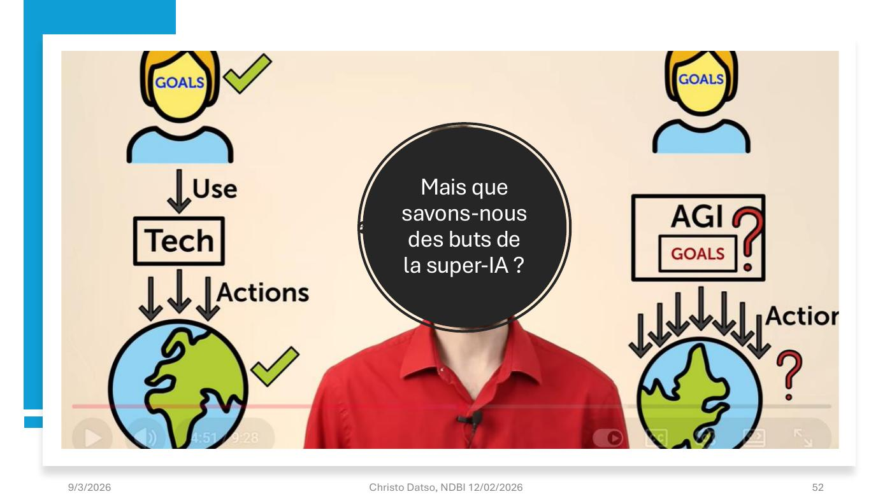
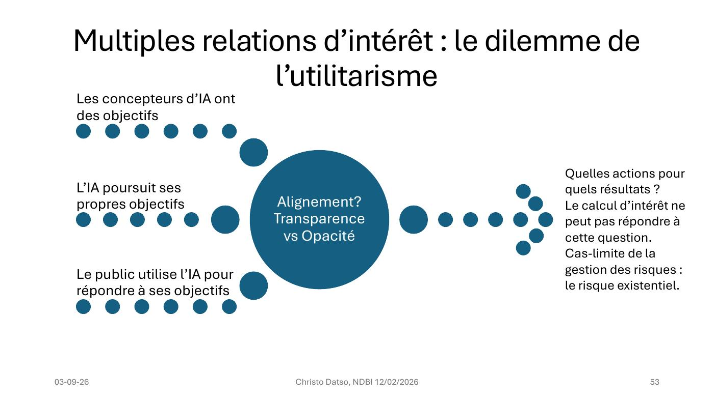

DIAPOSITIVES 50 à 57
Quatrième partie. Une expérience de pensée en trois postulats, puis une boucle sans fin.
L’exposé part d’une vidéo de Robert Miles (AI Safety) — « Tech is Good, AI Will Be Different » — et de son enchaînement d’évidences :
Technology is Good because People are Good
Postulat de départ, tel que l’exposé le formule : les humains utilisent la technologie pour augmenter le bien commun. Le raisonnement tient tant que les objectifs de l’outil restent les nôtres.


Le calcul d’intérêt ne peut pas répondre à cette question.
Cas-limite de la gestion des risques : le risque
existentiel.
C’est la reprise directe du tableau de la fiche 8, mais poussée à sa limite : l’utilitarisme suppose qu’on puisse agréger des utilités. S’il existe trois porteurs d’intérêts dont l’un — l’IA — a des buts que nous ne savons pas lire, l’agrégation devient impossible en principe, pas seulement en pratique.
La formulation est prudente et vaut d’être lue exactement : ce n’est pas « l’IA nous détruira », c’est « l’irréversibilité est le vrai critère ». Un risque dont on peut revenir se gère ; un risque dont on ne peut pas revenir change de nature. C’est aussi la seule justification non prophétique d’un moratoire.
L’exposé projette la page de superintelligence-statement.org, et son texte :
« Nous appelons à l’interdiction du développement de la superintelligence, qui ne sera levée qu’après :
1. un large consensus scientifique sur sa mise en œuvre sûre et contrôlée, et
2. une forte adhésion du public. »
Le contexte du texte, tel qu’il figure sur la page : des outils d’IA innovants pourraient apporter santé et prospérité, mais de nombreuses entreprises de pointe ont pour objectif affiché de développer, au cours de la prochaine décennie, une superintelligence capable de surpasser largement les humains dans la quasi-totalité des tâches cognitives. Sont invoqués : l’obsolescence économique, la déresponsabilisation humaine, la perte de liberté, de libertés civiles, de dignité et de contrôle, les risques pour la sécurité nationale, voire l’extinction de l’humanité.
Dario Amodei, fondateur d’Anthropic : « L’IA présente un risque existentiel » — texte intégral commenté publié par Le Grand Continent le 28 janvier 2026.
Yoshua Bengio, dès avril 2023 dans Le Monde : « Aujourd’hui, l’intelligence artificielle, c’est le Far West ! Nous devons ralentir et réguler. »
Et le rapport de référence : International AI Safety Report.
Le détail qui donne son poids à la séquence : Amodei dirige l’un des laboratoires qui construisent ces systèmes. Comme Hinton avant lui, c’est un praticien qui alerte — ce qui rend l’alerte plus difficile à ranger dans la catégorie du catastrophisme.
Face à cela, l’exposé propose non une solution mais un cycle :
C’est un cycle de gestion des risques classique, et c’est exactement ce qui manquait aux trois cas de l’introduction. L’étape 2 est celle que la fiche 11 vient de rendre possible avec le moniteur de l’OCDE ; l’étape 6 est celle qui a fait défaut aux Pays-Bas (fiche 3). Le mot important est « sans fin » : il n’y a pas d’état final où le risque serait réglé.